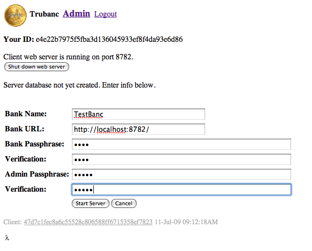
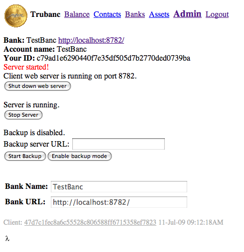

This page tells you how to start up and initialize a Trubanc server. It is only useful for people who want to run a Trubanc. If you just want to access somebody else's Trubanc server, you'll likely find the client documenation to be more useful.
NoteIf you just want to learn the Trubanc server by doing, follow the directions in the gray boxes titled "Summary".
Follow the Client installation instructions. The Trubanc binaries contain both client and server code.
Choose a directory in which the databases will be installed. When you run the executable, it will create a "trubanc-dbs" sub-directory of the current directory, and, inside that, "clientdb" and "serverdb" sub-directories.
The Trubanc application has a number of command line arguments, none of which are in the client documentation. Here's the help output (in 32-bit Linux):
$ ./trubanc-lx86cl -h
Usage is: ./trubanc-lx86cl [-p port] [--key keyfile --cert certfile] [--nonsslport nonsslport] [--uid uid --gid gid]
port defaults to 8782, unless keyfile & certfile are included, then 8783.
If port defaults to 8783, then nonsslport defaults to 8782,
otherwise the application doesn't listen on a non-ssl port.
keyfile is the path to an SSL private key file.
certfile is the path to an SSL certificate file.
uid & gid are the user id and group id to change to after listening on the port.
| Param | Description |
|---|---|
| port | The port to listen on. |
| keyfile | Path, absolute or relative to working directory, of SSL private key file. |
| certfile | Path, absolute or relative to working directory, of SSL certificate file. |
| nonsslport | If keyfile and certfile are specified, port will be listened on for an SSL connection. If you also want to listen for non-SSL connections, nonsslport says which port to listen on for that. Attempts to access the client or server active pages on nonsslport, will redirect to the SSL port, using HTTPS. Static web pages (see below) will remain unencrypted. |
| uid / gid | Ports less than 1024 (e.g. the HTTP default, 80, and the HTTPS default, 443) are privileged. You need to run the Trubanc application as root in order to use them. If you do that, and specify uid and gid, the app will change its group id and user id to these after starting to listen on port (and nonsslport). This allows you to use a privileged port, but not run as root. Another way to do that is to run the Trubanc server on non-priveleged port(s) and use Apach mod_proxy or Pound or another reverse proxy to listen on the privileged port(s). |
Since you'll want the server to keep running after you've logged off of the server machine, you'll need to either start it in the startup scripts, or use nohup or screen.
$ cd ~/trubanc
$ screen -S trubanc
$ sudo ./trubanc-lx86cl -p 443 --key key.pem --cert cert.pem --nonsslport 80 --uid `id -u` --gid `id -g`
Client web server started on port 80
Web address: http://localhost/
Starting the Trubanc application enables the its web server to listen on the port(s) you specified, and the client web server will be fully functional, but the bank database needs to be initialized before it can serve as a Trubanc bank. To do that, go to the "Register a new account" screen, and create an account, with a blank "Coupon", for the bank administrator.
Now click the "Admin" link at the top of the page, and enter a "Bank Name", "Bank URL", "Bank Passphrase" and "Verification". Enter the passphrase you used for the admin account in "Admin Passphrase" and "Verification".
Press the "Start Server" button. The bank's 3072-bit private key will be created (and a new admin private key if you used a new passphrase for that), both the bank and the administrator accounts will be added to the client database, with each other as contacts, and 200,000 usage tokens will be transferred to the admin account. Because the bank's account doesn't keep an inbox or an outbox, and because customers are not allowed to spend to it, I recommend that you distribute usage tokens, and bank-issued assets, from the admin account. Use the bank account only to give the admin account more usage tokens, and to administer the bank server.
Above is the "Admin" page after the bank has been initialized. When there's a server database, only the bank can get to the "Admin" page, and new client accounts require a server coupon, or an existing server account. Before that, anyone can create new accounts and go to the "Admin" page.
The "Shut down web server" button stops the web server and exits the Trubanc application. The "Stop Server" button stops the bank from serving web requests, but leaves the client web server running to serve client requests. I explain the "Start Backup" and "Enable backup mode" buttons below.
When the server is running, it responds to bank requests via the URL "/?msg=...", to client requests via "/client/...", and serves static web pages in the "www" sub-directory of the working directory (http://example.com/foo.html serves the file "www/foo.html"). Only "index.html" is supported as a directory index file, but you can include any other static HTML, images, or JavaScript files you desire. That's how this page is being served. There is currently no support for customizing the client web pages, but you can do anything you want for the static HTML site.
When you first start the Trubanc application, it serves only client web requests. To start the bank server, you need to log in as the bank. I do this by logging into the bank machine with SSH, then using Links in that terminal window to log in to the bank. Lynx would also work, or ELinks. Or, if your bank has SSL, you could log in with a regular web browser.
Copyright © 2009 Bill St. Clair, All Rights Reserved